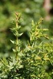

|

Деревцо с прямым стволом, до 12 м выш., чаще гораздо ниже 1—3 м, с серобурой, шелушащейся корой;
ветви то прижатые кверху, то отстоящие, почему форма кроны весьма различна; листья линейные, 4—16,
редко 20 мм ДЛ., длинно-заостренные, сверху неглубоко-желобчатые, с широкой белой полоской вдоль средней жилки,
снизу с тупым килем; плоды одиночные, 7—9 мм в поперечнике, весьма обильные, округлые, в 3—4 раза короче листьев,
иссиня-черные; с. по 3 (реже 1—2), продолговато-трехгранные, буроватые, созревают на второй год.
Однодомные или чаще двудомные; колоски залагаются в конце лета;
пыльниковые экземпляры имеют более узкую и более приостренную крону.
Растет в сосновых борах, на верещатниках, на известняках по берегам рек,
реже на моховых болотах, в подлеске лиственных и смешанных лесов, на сухих холмах и по сухим горным склонам.
Фотограф: Дмитрий Орешкин |